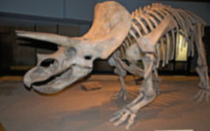
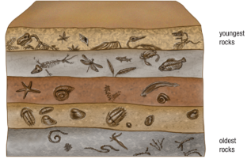

Evolution of an Idea
Adaptation and Heredity

A student of Buffon’s, Jean-Baptiste Pierre Antoine de Monet, Chevalier de Lamarck (1744–1829), was the first scientist to offer a possible mechanism for the evolution of species. Lamarck proposed that evolutionary change resulted from two distinct principles.
Callout
Lamarck’s first principle was that of use and disuse. He believed that structures an individual used became larger and stronger, while structures that were not used became smaller and weaker. On the surface, this principle seems to be supported by evidence from everyday observations. When athletes train, their muscles respond by getting stronger and increasing in size.

Lamarck’s theory of evolution by the inheritance of acquired characteristics
Callout
Patterns of Change
Even scientists who did not accept the idea that species could change were finding evidence that was extremely puzzling. They found some of this evidence in the form of fossils, which are preserved ancient remains of dead organisms. A minimum age of 10, 000 years is sometimes used as a criterion for designating remains as a fossil.
Select each tab to learn more.
Most fossils are hard impressions in solid rock. Many leave little doubt as to what they represent. No one could mistake a well-preserved fossil of Knightian for anything other than a fish or fail to recognize an obvious fossilized leaf. It seemed self-evident to most scientists that such fossils had been formed by once-living organisms.
At first, scientists may have speculated that fossils were nothing more than recently living organisms that had become trapped in muddy deposits and then hardened over a relatively brief period of time.
Perhaps fossils were just preserved plants and animals that were no more than a few hundred or a few thousand years old.
Many fossils appear to be of unusual and unknown organisms. There are fossils of thousands of species that are no longer living;
• There are no fossils of most living species.
• Fossils are often buried very deep within rock formations. Some are more than a kilometer below Earth’s surface.
• Fossils are often found in unexpected locations. For example, fossils of sea life are found high in mountain formations and in present-day deserts.
Fossils of dinosaurs, like these triceratops, leave little doubt that some fossil species are dramatically different than any species alive today.
Callout
Catastrophism and Uniformitarianism
The famous paleontologist Georges Cuvier (1769–1832) conducted the first detailed studies of fossils. Cuvier noted the following:
• Fossils of very simple organisms are found in all depths of fossil deposits.
• Fossils of more complex organisms are found only at shallower depths, in younger rock.
• Fossils in the shallower depths are more likely to resemble living species.
• Rock layers contain fossils of many species that do not occur in layers above or below them

Cuvier noticed that all fossils from deeper layers were simpler than the more complex fossils above them
Callout
Although the fossils Cuvier found showed a clear pattern of change from layer to layer, Cuvier believed that species themselves did not change. Instead, he proposed a theory of catastrophism. According to the theory of catastrophism, global catastrophes such as floods caused the widespread extinctions of species.
These extinct species, some of which were fossilized, were then replaced by a newly created set of species. Cuvier’s theory accounted for the different groups of species in each layer but did not adequately account for why each layer included progressively more complex forms.